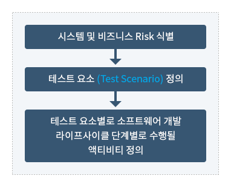

일반적으로 테스트 전략 활동은 SW개발 프로세스의 요구사항 분석단계 말에서 이루어지며 사용자 요구사항이 파악되는 시점에서 개발시스템의 Risk, 범위,
담당자 지정, 확보된 예산 등을 고려하여 향후 수행되어질 필요가 있는 테스트에 대한 전체 청사진(BluePrint)을 구상하는 단계라고 볼 수 있으며
이러한 활동의 결과로 마스터 테스트 계획서를 작성한다.
| 주요 입력물 |
Tasks |
산출물 |
- 프로젝트 개발계획서
- 고객요구 정의서
- 아키텍처 설계서
|
- 테스트 요소 식별
- 테스트 범위 정의
- 테스트 단계 및 수행방안(테스트 접근 방법) 정의
- 품질 목표 수준 정의
- 테스트 추진 체제 정의
- 테스트 산출물 및 책임자 정의
- 마스터 테스트 계획서 작성
- 마스터 테스트 계획서 검토
- 마스터 테스트 계획서 승인
|
|
시스템과 관련된 위험을 평가하고, 그 위험과 관련된 테스트 요소를 정의한다.
테스트 수행 시 제거되어야 하는 시스템 관련 위험이나 이슈를 테스트 요소라 하며 테스트 요소 자체가 위험은 아니지만, 비즈니스 위험으로 변환될 수 있기
때문이다.
예를 들어, 소프트웨어가 사용하기 쉽지 않다면 처리 결과가 부정확할 수 있다.
테스트 요소를 식별하기 위해서는 다음과 같은 활동들이 요구된다.
- 테스트 요소 식별
- (테스트 대상) 시스템 및 관련 비즈니스 위험을 식별
- 테스트 수행 중에 평가되어야 하는 위험을 기반으로 테스트 요소를 식별
- 심각도 및 위험도를 고려하여 테스트 요소를 분류
- 식별된 테스트 요소에 대한 테스트 종류별 테스트 활동 정의
- 개발프로젝트 생명주기(Lifecycle)을 파악
- 테스트 요소와 관련한 위험을 최소화하기 위한, 개발프로젝트의 생명주기 각 단계에 적합한 테스트 종류를 정의
- 테스트 종류별 테스트 방법을 정의

예를 들어, ‘트랜잭션의 정확성’은 심각한 비즈니스 위험이며, ‘정확성’은 소프트웨어 개발 라이프사이클에 따라 추적되어야 할 테스트 요소이다.
테스트 전문팀 혹은 프로젝트팀은 시스템을 통해 입력/처리/출력되는 데이터가 프로젝트 라이프사이클 동안 정확하고 완전하다는 것을 보장해야 한다.
아래는 테스트 전략 수립 시 고려해야 할 테스트 요소의 예이다.
| 시스템 위험 |
테스트 요소 |
근 거 |
단위 테스트 |
통합 테스트 |
시스템 테스트 |
| 컴퓨터 조작의 부정확성 |
정확성 |
시스템에서 수행되는 중요한 조작의 정확성 확인 |
정확성을 위한 처리 과정 테스트 |
중요한 단위(Unit) 사이의 데이터 흐름과 전달 테스트 |
완전한 시스템에서 정확성과 데이터 흐름 테스트 |
| 데이터 무결성 /마스터 데이터 유지 |
파일 무결성 |
파일과 데이터베이스 컨텐츠의 정확성 확인 |
데이터베이스 갱신의 정확성 테스트 |
트랜잭션 완료 시, 마스터와 트랜잭션 기록의 정확성 테스트 |
완전한 시스템에서 마스터와 트랜잭션 기록의 정확성 테스트 |
| 보안 |
권한 부여 |
사용자의 처리 권한 부여 확인 |
N/A |
다른 사용자를 이용한 처리 권한 테스트 |
다른 사용자를 이용한 처리 권한 테스트 |
| 시스템 실패 |
프로세스의 연속성 |
시스템의 복구 성능 확인 |
N/A |
N/A |
시스템 기능 복구 테스트 |
테스트 요소는 다양한 소프트웨어 개발 라이프사이클 단계에서의 테스트 액티비티 범위를 정의하는 중요한 항목이다.
테스트 범위는 시스템의 중대성뿐만 아니라 프로젝트의 일정 제약 사항에도 영향을 받는다. 테스트 범위는 위에서 언급된,
그리고 테스트 할 필요가 있는 테스트 요소를 포함한다.
향후 각 단계별 상세 테스트 계획과 설계는 테스트 전략 수립 단계에서 식별된 테스트 요소에 영향을 받는다.
프로젝트 범위 및 상위 요구사항을 분석하여 테스트 범위를 설정한다.
테스트를 통하여 적합성을 검증 받아야 할 테스트 범위(Scope)는 대상 시스템 전체가 될 수도 있고, 경우에 따라 일부분이 될 수도 있다.
선정된 테스트 범위는 향후 테스트 단계별 상세 계획 수립 시, 요구분석 및 설계 단계에서 정의된 각 테스트 요구사항 들을 검토하여 테스트 항목(Test Items),
테스트할 항목 특성(Features to be tested)과 테스트하지 않을 항목 특성(Features not to be tested)을 명세화 하는 기반 자료로
활용된다.
테스트 단계에서 수집/관리가 필요한 품질 지표를 기록한다.
대부분 품질 목표 수준은 개발계획서’2. 프로젝트 성과 목표’에 기재하도록 되어 있으며 테스트 관리자(또는 PM, 테스트 설계자)는
테스트 단계에서 필요한 데이터를 수집하여 측정지표로 관리하여야 한다.